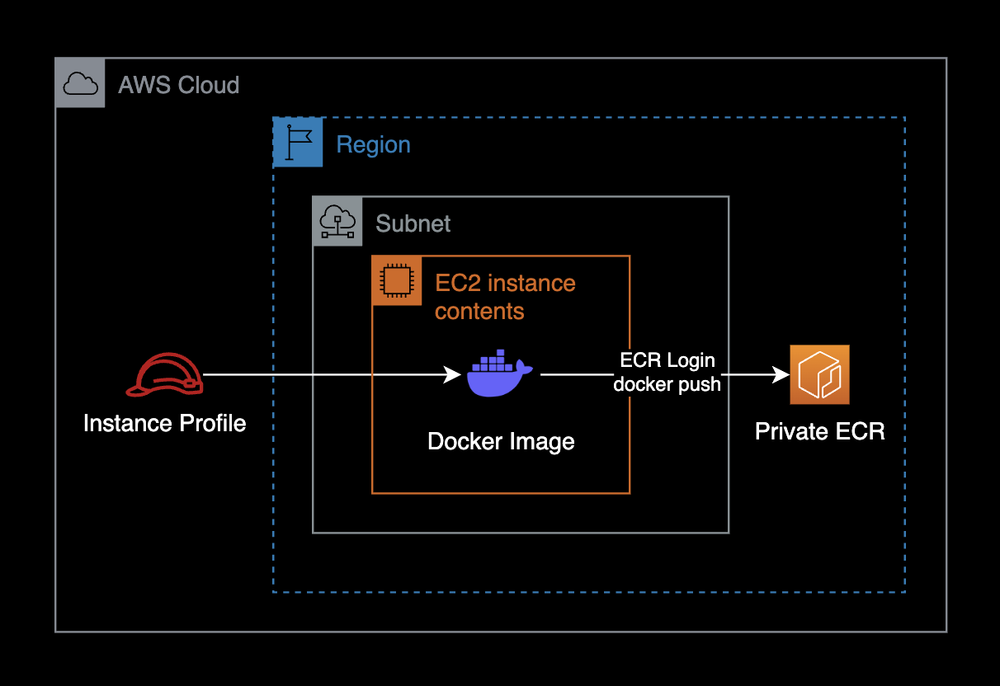
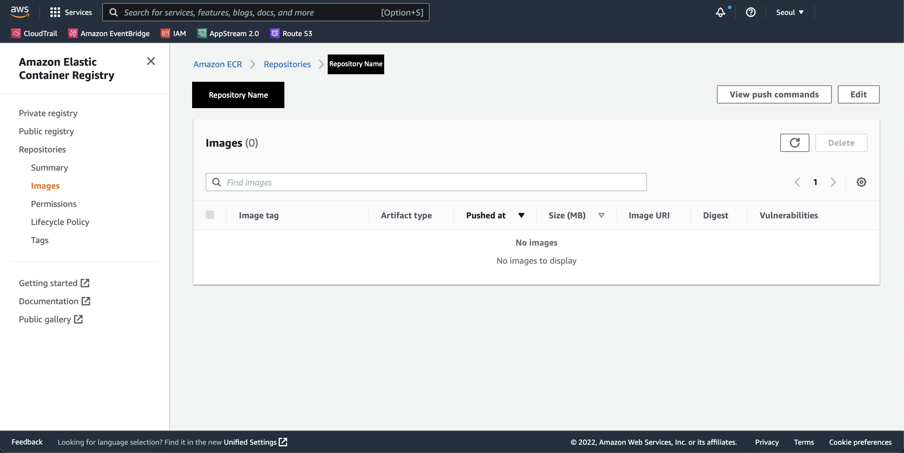
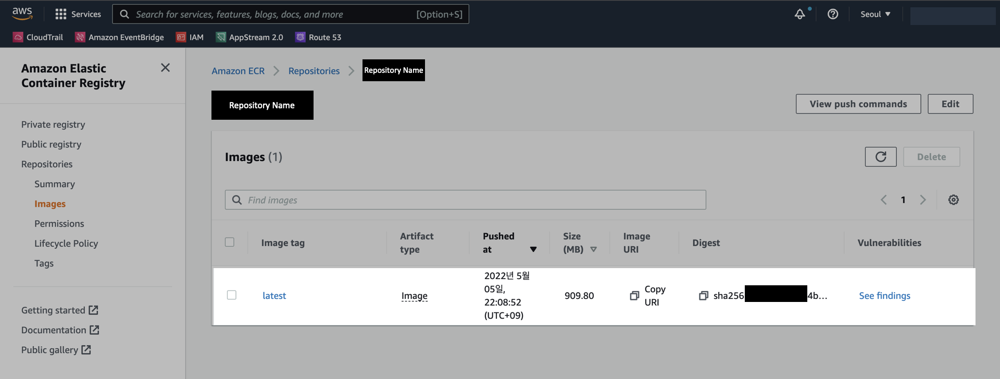

EC2에서 ECR로 도커 이미지 푸시
개요
EC2에서 ECR Private 레포지터리로 도커 이미지를 푸시하는 방법을 소개한다.
구성도로 표현하면 다음과 같다.

환경
컨테이너 이미지 업로드를 실행하려고 하는 EC2 인스턴스의 환경은 다음과 같습니다.
- OS : Ubuntu 20.04.3 LTS
- Shell : bash
- AWS CLI : 1.18.69
- Docker : 20.10.7
전제조건
EC2에 연결된 IAM RoleInstance Profile에 ECR 업로드 권한이 부여되어 있어야 한다.
{
"Version": "2012-10-17",
"Statement": [
{
"Effect": "Allow",
"Action": [
"ecr:Describe*",
"ecr:Get*",
"ecr:BatchCheckLayerAvailability",
"ecr:BatchGetImage"
],
"Resource": "*"
},
{
"Effect": "Allow",
"Action": [
"ecr:PutImage",
"ecr:InitiateLayerUpload",
"ecr:UploadLayerPart",
"ecr:CompleteLayerUpload",
"ecr:BatchDeleteImage"
],
"Resource": [
"arn:aws:ecr:REGION:AWS_ACCOUNT_ID:repository/REPOSITORY_NAME"
]
}
]
}
위 IAM Statement에는 다음과 같은 권한이 부여되어 있다.
- ECR 로그인
- ECR 저장소로 이미지 업로드 (Push)
- ECR 저장소로부터 이미지 다운로드 (Pull)
- ECR 저장소로부터 이미지 검색
REGION, AWS_ACCOUNT_ID, REPOSITORY_NAME 값은 개인 환경마다 다르다.
IAM statement 안에 들어 있는 해당 값들을 꼭 자신의 환경에 맞게 변경해서 사용한다.
본문
1. ECR 레포지터리 생성
AWS Management Console에 로그인한다.
이미지를 업로드하기 위해 ECR Private 레포지터리를 미리 생성해놓는다.

현재는 이미지가 없이 비어있는 ECR 레포지터리이다.
2. ECR 로그인
현재 시스템에 AWS CLI가 설치된 걸 확인한다.
Amazon Linux 2 또는 Ubuntu 20.04.3 LTS 기준으로, OS에 AWS CLI가 기본적으로 설치되어 있다.
$ aws --version
aws-cli/1.18.69 Python/3.8.10 Linux/5.13.0-1017-aws botocore/1.16.19
AWS CLI 1.18.69 버전이 설치된 걸 확인할 수 있다.
이미지를 푸시하려는 Amazon ECRElastic Container Registry 레포지터리에 대해 Docker 클라이언트를 인증한다.
- 이미지를 업로드할 ECR 레포지터리가 여러개일 경우, 인증 토큰을 각각 받아야 한다.
- 인증 토큰은 12시간 동안만 유효하다.
$ aws ecr get-login-password --region REGION | docker login --username AWS --password-stdin AWS_ACCOUNT_ID.dkr.ecr.REGION.amazonaws.com
...
Login Succeeded
Login Succeeded 메세지가 출력되면 로그인이 정상적으로 완료된 것이다.
3. 이미지 태그 변경
ECR 레포지터리에 업로드할 도커 이미지를 확인한다.
$ docker images
REPOSITORY TAG IMAGE ID CREATED SIZE
test-user/nginx 0.0.7 00ffc0fd000a 9 days ago 1.35GB
test-user/nginx 0.0.6 b0a00d000b00 9 days ago 1.35GB
내 경우 Image ID가 00ffc0fd000a인 이미지를 ECR 레지스트리에 업로드하려고 한다.
ECR 레지스트리에 업로드 할 이미지에 태그를 붙인다.
tag 명령어 형식
$ docker tag IMAGE_ID AWS_ACCOUNT_ID.dkr.ecr.REGION.amazonaws.com/ECR_REPOSITORY_NAME:TAG
tag 명령어 예시
$ docker tag 00ffc0fd000a 123456789012.dkr.ecr.ap-northeast-2.amazonaws.com/repository:latest
태그를 붙인 이미지가 새로 추가된 걸 확인한다.
$ docker images
REPOSITORY TAG IMAGE ID CREATED SIZE
123456789012.dkr.ecr.ap-northeast-2.amazonaws.com/repository latest 00ffc0fd000a 9 days ago 1.35GB
test-user/nginx 0.0.7 00ffc0fd000a 9 days ago 1.35GB
test-user/nginx 0.0.6 b0a00d000b00 9 days ago 1.35GB
똑같은 이미지를 태그만 바꿔서 등록헀기 떄문에 IMAGE ID가 34ffc1fd958a로 동일하다는 점을 확인할 수 있다.
4. 이미지 업로드
docker push 명령어를 사용해서 컨테이너 이미지를 ECR 레포지터리에 푸시한다.
push 명령어 형식
$ docker push AWS_ACCOUNT_ID.dkr.ecr.REGION.amazonaws.com/ECR_REPISOTRY_NAME:TAG
AWS_ACCOUNT_ID, REGION, ECR_REPOSITORY_NAME, TAG 값은 각자의 환경에 맞게 바꿔준다.
push 명령어 예시
$ docker push 123456789012.dkr.ecr.ap-northeast-2.amazonaws.com/repository:latest
...
latest: digest: sha256:18fxxxxxxxxxxxxxxxxxxxxxxxxxxxxxxxxxxxxxxxxxxxxxxxxxxxxxxxxxxxxx size: 5584
컨테이너 이미지를 ECR 레포지터리에 업로드 완료했다.
5. 결과 확인
AWS Console 로그인 후 ECR Registry에서 이미지가 생성된 것을 확인할 수 있다.

이것으로 컨테이너 이미지를 ECR에 업로드하는 작업을 완료했다.
참고자료
ECR 업로드 작업 같은 경우는 AWS 공식문서에도 친절히 설명되어 있다.
Amazon ECR 공식문서
Docker 이미지 푸시
Amazon ECR 공식문서
레지스트리 인증
인증 토큰은 12시간 동안만 유효하다는 내용.